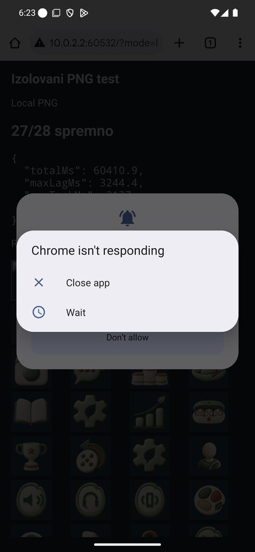
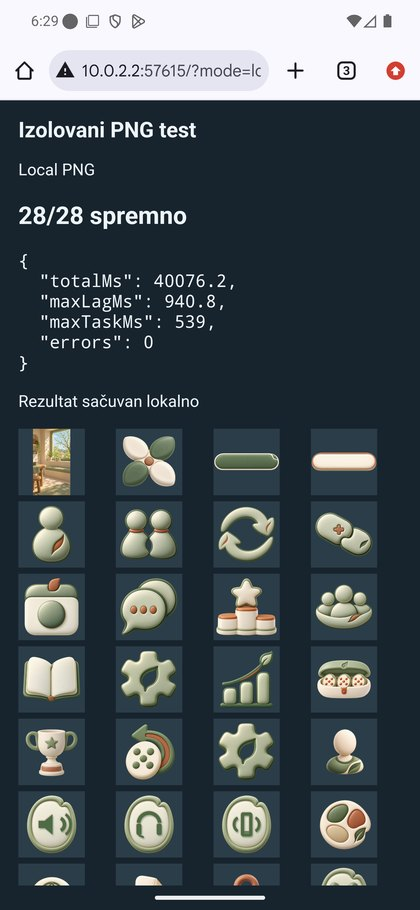
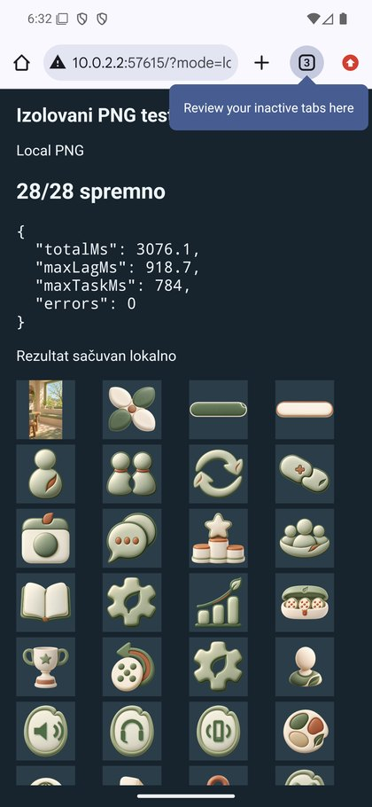
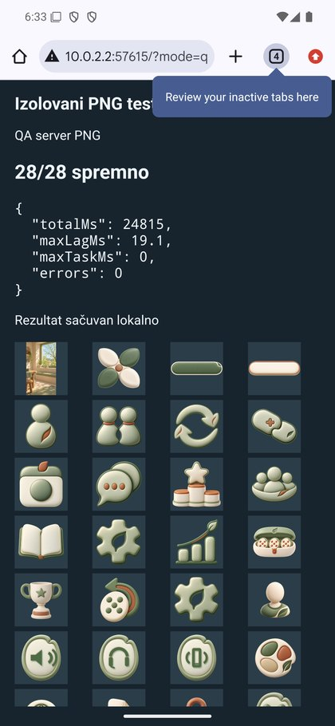
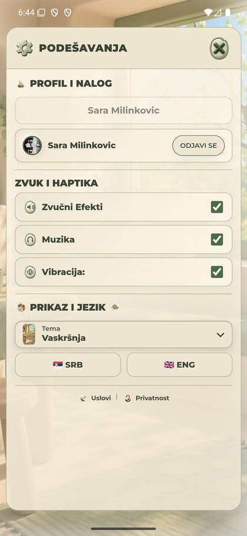
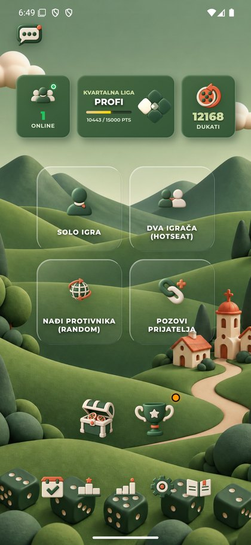

Isti28PNG: izolovano Android merenje
4.604.051B. Kod igre nije menjan. Ovo su pojedinačna merenja u različitim uslovima, bez dokazane uzročnosti jednog faktora.
| Uslov | Spremno | Ukupno(s) | Maxlag(ms) | Maxtask(ms) |
|---|
| Desktop lokalni — validacija fixture-a | 28/28 | 0.247 | 87.8 | 0 |
| Android lokalni, dva AVD-a, prvo Chrome pokretanje/ANR | 27/28 | 60.411 | 3244.4 | 2137 |
| Android lokalni, jedan AVD, pre hladnog starta | 28/28 | 40.076 | 940.8 | 539 |
| Android lokalni, jedan AVD, posle hladnog starta/foreground | 28/28 | 3.076 | 918.7 | 784 |
| Android QA, prvi izmereni prolaz posle hladnog starta | 28/28 | 24.815 | 19.1 | 0 |
| Desktop QA, svež browser kontekst | 28/28 | 0.569 | 36.7 | 0 |
| Android QA, ponovljeni prolaz, već pripremljene slike | 28/28 | 0.363 | 26.9 | 0 |
Chrome je prijavioANR i u lokalnoj fixturestranici bez igre/Rendera. Posle hladnog starta/foreground-a isti lokalniPNGpaket3,076s;inicijalniQA24,815s,ponovljeni0,364s. Ovo razdvaja deo uticaja okruženja i prvog učitavanja, ali ne dokazuje da je app/S25sporost potpuno rešena.
StvarnaQAaplikacija posle oporavka: jedanEasterizbor uspešan,28PNGreadydo1,967s,0timeout. SačuvanWebViewkeš; nije meren hladni transfer ili ukupna animacija.
Rezultati i granice · Namenski appPNGtiming · Raniji neuspeh37s ostaje istorijski dokaz
Odvojeni Chrome lokalni test:27/28iANR. Bez koda igre i bezQAserverPNGputanje.

Jedan emulator pre hladnog starta:28/28,40,076s.

Posle hladnog starta istogAVD-a i foreground prozora:28/28,3,076s.

Prvi izmereni javniQA prolaz posle hladnogstarta:28/28,24,815s.

Ponovljeni javniQA prolaz:28/28,0,364s.
Povratak postojećeQAaplikacije,Greenmeni,saldo12168.
JedanEasterizbor uQAaplikaciji uspešan;28PNGreadydo1967ms,0timeout. SačuvanWebViewkeš.

Po završetku vraćenGreenmeni;saldo12168isti.
